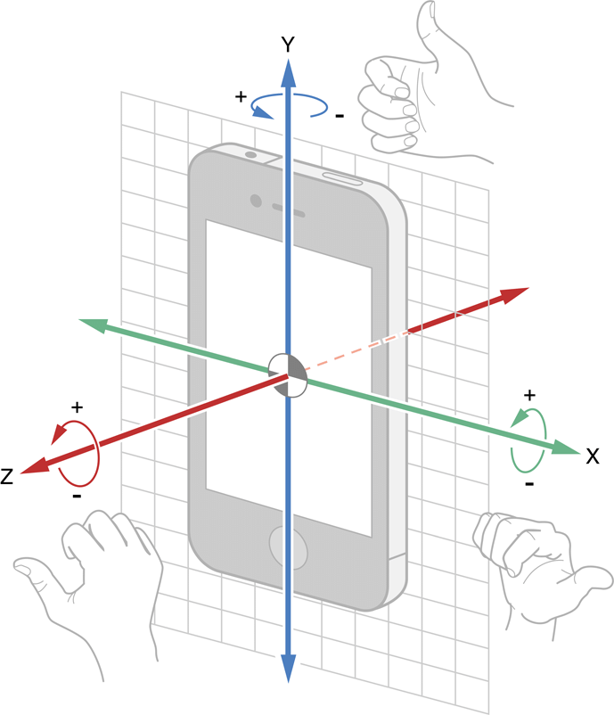

Los dispositivos modernos contienen arreglos de sensores embebidos. Una de las funcionalidades de acceder programaticamente al dispositivo usando Python es que podemos interactuar directamente con los sensores. En esta libreta vamos a aprender como determinar que sensores se tienen en el dispositivo y como tomar lecturas de ellos. Posterioremente usaremos estas lecturas para algunas aplicaciones.
lo android.
Vamos a seguir la recomendacion de la nota anterior y verificar que el dispositivo esta conectado a la computadora.
!adb forward tcp:9999 tcp:2222
import android
droide=android.Android()
droide.makeToast("Hola desde Jupyter!")
Usaremos dos de las funciones para capturar eventos que construimos en el laboratorio anterior. La primera de ellas event_loop es una funcion auxiliar para captar eventos vaciando el buffer de eventos y capturando el evento mas reciente. Hemos modificado la version presentada antes para que regrese los valores resultantes de la ejecucion.
import time
def event_loop():
for i in range(10):
time.sleep(1)
droide.eventClearBuffer()
time.sleep(1)
e = droide.eventPoll(1)
if e.result is not None:
return e.result
return False
La segunda funcion retorna lectura de los sensores de aceleracion con una frecuencia de una lectura por segundo. Recordemos que de acuerdo a la documentacion, el primer valor dentro del llamado a startSensingTimed corresponde al sensor y el valor 2 representa el acelerometro del dispositivo.
def prueba_sensor():
# 2: acelerometro; 1000 milisegundos entre lectura
droide.startSensingTimed(2, 1000)
try:
return event_loop()
finally:
droide.stopSensing()
prueba_sensor()
El programa anterior es util cuando necesitamos abrir una sola conexion con el sensor para obtener una lectura de su estado. Este modelo forza la utilizacion de un controlador central. Antes de continuar vamos a determinar que sensores tenemos disponibles en nuestro dispositivo.
def prueba_acelerometro():
# 2: acelerometro; 1000 milisegundos entre lectura
droide.makeToast("Prueba de acelerometro...")
droide.startSensingTimed(2, 1000)
try:
return droide.sensorsReadAccelerometer().result
finally:
droide.stopSensing()
prueba_acelerometro()
positive
:El resultado de la ejecucion anterior es una lista con tres valores que corresponden a las lecturas de la aceleracion en cada direccion del espacio tridimensional usando un sistema de coordenadas situadas en el dispositivo como se muestra en el esquema. | 
Vamos a modificar las funciones de la API para leer los datos del sensor de campo magnetico (magnetometro)
def prueba_magnetometro():
# 3: magnetometro; 1000 milisegundos entre lectura
droide.makeToast("Prueba de magnetometro...")
droide.startSensingTimed(3, 1000)
try:
return droide.sensorsReadMagnetometer().result
finally:
droide.stopSensing()
prueba_magnetometro()
y del sensor de orientacion (giroscopo):
def prueba_orientacion():
# 1: todos los sensores; 1000 milisegundos entre lectura
droide.makeToast("Prueba de orientacion...")
droide.startSensingTimed(1, 1000)
try:
return droide.sensorsReadOrientation().result
finally:
droide.stopSensing()
prueba_orientacion()
En todos los casos obtnemos una lista con los tres valores correspondientes a cada una de las direcciones de acuerdo al diagrama anterior. La interpretacion fisica de cada lectura se deja para mas adelante y es importante saber como interpretar las lecturas ya que los valores dan informacion sobre el contexto del dispositivo: movimiento (aceleracion), orientacion (giroscopo) y posicion respecto al norte magnetico de la Tierra (magnetometro).
Algunos dispositivos incluyen mas sensores, tipicamente todos tienen ademas de los tres ya indicados un sensor de luminosidad. La API proporciona una forma de saber que otros sensores se tienen y veremo ademas la ventaja de usar nuestra funcion event_poll.
Evaluen la siguiente funcion una vez, registren el numero que resulta y despues cubran la pantalla de su dispositivo y vuelvan a evaluar. Que ocurre?
def prueba_iluminacion():
# 4: sensor luminosidad; 1000 milisegundos entre lectura
droide.makeToast("Prueba de luminosidad...")
droide.startSensingTimed(4, 1000)
try:
return droide.sensorsGetLight().result
finally:
droide.stopSensing()
prueba_iluminacion()
Evaluen nuevamente la funcion pero con la pantalla cubierta...
prueba_iluminacion()
La API incluye una funcion nombrada readSensors que regresa los valores mas recientes que se han registrado por los sensores. Esta funcion se invoca primero indicando que los sensores deben estar "atentos" a censar:
droide.startSensingTimed(1, 1000)
el llamado de la funcion es como sigue:
lecturas = droide.readSensors().result
y finalmente no debemos olvidar indicar al dispositivo que deje de tomar lecturas de los sensores, de otro modo puede interferir con otras actividades:
droide.stopSensing()
La funcion event_loop que construimos previamente nos permite acceder a las lecturas de los sensores disponibles pero ya controla los pasos anteriores:
def prueba_sensores():
# 1: todos los sensores; 1000 milisegundos entre lectura
droide.startSensingTimed(1, 1000)
try:
return event_loop()
finally:
droide.stopSensing()
lecturas2 = prueba_sensores()
Comparemos los sensores disponibles entre ambos metodos:
print(lecturas.keys())
print(lecturas2[0]['data'].keys())
Vamos a realizar un programa que registre los datos del acelerometro. Este sera util para conocer el estado de movimiento del dispositivo (y por lo tanto del usuario).
La estructura del programa es como sigue: primero definimos el tiempo entre lecturas del sensor y lo nombramos dt.
dt = 100 # 100ms entre lecturas
Ahora vamos a definir el tiempo total que el dispositivo estara registrando valores, en este caso por segundos:
tfin = 3000 # toma lecturas por 3 segundos
El dispositivo va a tomar lecturas del estado del sensor en el siguiente segmento de codigo,
tiempo = 0
droide.startSensingTimed(2, dt)
while tiempo <= tfin:
print droide.sensorsReadAccelerometer().result
time.sleep(dt/1000.0)
tiempo += dt
droide.stopSensing()
Como tenemos acceso a las lecturas, podemos visualizar los tres valores de las aceleraciones captadas por el sensor en el sistema local. Para eso vamos a usar una libreria especializada para hacer graficass y que deben tener instalada. Primero modificamos el programa como sigue:
acel = []
tiempo = 0
droide.startSensingTimed(2, dt)
while tiempo <= tfin:
acel.append(droide.sensorsReadAccelerometer().result)
tiempo += dt
droide.stopSensing()
Donde hemos definido la lista acel inicialmente vacia, y a la que iremos agregando los valores del sensor dentro del while. Ahora evaluen lo siguiente
import pandas as pd
%matplotlib inline
La libreria pandas contiene metodos y clases para un tipo de estructuras de datos llamadas DataFrames que permiten la manipulacion y el analisis de datos de manera eficiente. La segunda linea nos permite visualizar las graficas en la libreta. Ahora evaluen lo que sigue
a = pd.DataFrame(acel, columns=["ax","ay","az"])
La estructura a contiene los datos del sensor obtenidos de la lista acel en un formato similar a las tablas de columnas y renglones tradicionalmente usadas en software de oficina. Pero ademas contiene metodos heradados que permiten la manipulacion eficiente de los datos. Por ejemplo podemos graficarlos evaluando
a.plot()
Van a modificar los programas necesarios para graficar los valores de orientacion, campo magnetico y luminosidad de sus dispositivos.
La libreta de entrega de este laboratorio debe mostrar los programas y las tres graficas correspondientes a los sensores.